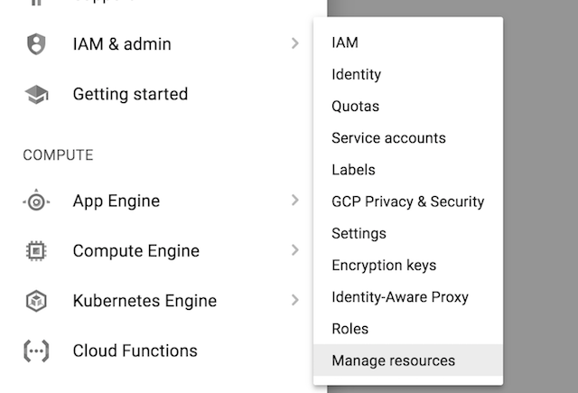
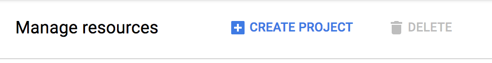
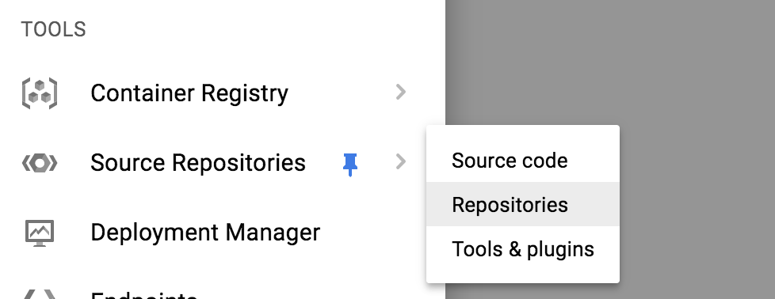
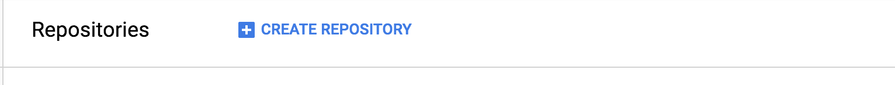

tldr;
Google Cloud Platform (GCP) has a great code/document repo service (Cloud Source Repository) that is free for 5 project/users month.
Repositories
It goes without saying that if you work with code, or any type of document where you’d like to save versions, then having a code source control (github, gitlab, etc) or cloud storage service (box, dropbox, etc) is essential. One great feature of the GCP is the Cloud Source Repository service which is a hosted version control system. When you sign up for a GCP account you can start using the service and storing your code/d **Please note that only the git version control is supported at this time.
Pricing
It’s pretty straightforward: you get unlimited number of repositories/month for up to 5 project/users month - which means if you are working on 3 projects by yourself then you aren’t being charged vs if you work with an additional user on 3 projects you are since that is: 2 users X 3 projects. Even if you do go over the 5 user/project limit it’s only $1 per user/project for unlimited repos which is a great deal - esp if you are utilizing other GCP services.
Usages
Besides the know uses of repositories to store versions of computer code you can also use GCP cloud repos for:
- Recipe sharing and editing: clone the recipe, make changes, share, and keep versions for future use.
- Writing & Blogging: Keep different versions of your text/stories and explore plots while being able to scrap and return to starting points easily.
- Legal Documents: While blockchain may be the future of legal documentation GCP cloud repos are an excellent way to provide control and versioning of important items and provide an audit trail to changes made.
- Resume: Store versions of your resume and allow for others to review/edit and merge their changes in.
Getting Started
- Sign up for an account on the Google Cloud Platform: https://console.cloud.google.com/freetrial
- Once your account is created you need to create a project that you can associate with your Cloud Source Repos ->
Navigate to the Product & services link in the upper left corner:
From the menu list select ‘IAM & admin’ -> ‘Manage Resources’:
On the Mange Resources view just click ‘Create Project’ and add a name:
Once your project is created and selected then navigate to Source Repositories (under Tools):
Go ahead and start creating repos!

Finishing up
Hopefully this short post has helped convince you to take a look at the GCP Cloud Source Repository to use in whatever document/source code strategy you need. The next post will be around installing the gcloud CLI command line tool and we’ll run through some gcloud repo command examples to create and manage repos. Thanks for reading!